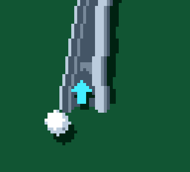
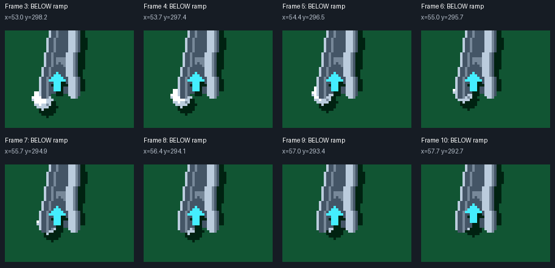

Staged shot rendered by the actual C++ game. Identical ball motion and speed; only zoom onset changes. Each ride continues to the configured exit. No timing variant has been applied to the game.

Generate the eased preview with tools/preview_ramp_smooth.py. The video runs at 60 fps, normal speed.
Original capture and drawing rules, before the front-lip fix. Slow motion for inspection.


This shot misses the front entrance. It remains below the ramp and cannot be captured later through the side.

